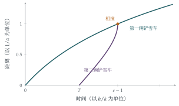

STEP III Specimen paper，第 11 题
继续之前，请先阅读题目（原题为英文）。题目载于 STEP Support Programme 的题目资料库： step.maths.org/questions/spec-s3-q11
引子
雪不停地均匀落下。一辆铲雪车（snowplough）沿着一条路出发，前方的积雪愈来愈深，车速也愈来愈慢。稍后，第二辆铲雪车沿着已经清理过的路面跟上。它遇到的只是第一辆车驶过之后才落下的雪，积雪较浅，所以走得较快，最终会追上前车。那是甚么时候？
这是一道著名问题的变体，原题由 Ralph Agnew 于 1942 年发表，后来成为微分方程（differential equations）中最广为人知的趣题之一。它的妙处在于，第二辆车的速率取决于第一辆车何时驶过每一点，所以第 (i) 部分的解会代入第 (ii) 部分的方程之中。而这条方程“倒过来”写，把时间看成距离的函数，才最为巧妙。
动笔之前
第一辆铲雪车在时间 \(t\) 遇到的积雪深度为 \(h + kt\)。它的速率是多少？求 \(x\) 作为 \(t\) 的函数较容易，还是求 \(t\) 作为 \(x\) 的函数较容易？
它的速率是 \(\frac{\mathrm{d}x}{\mathrm{d}t} = \frac{k}{\alpha(h + kt)}\)。这条方程可以干净利落地分离变量（separation of variables）。把它倒过来，\(\frac{\mathrm{d}t}{\mathrm{d}x} = \frac{\alpha(h + kt)}{k}\)，这是一条以 \(t\) 为 \(x\) 的函数的简单线性（linear）方程。对第一辆车来说，两种写法都行得通；对第二辆车来说，倒过来的形式却必不可少。
逐步解题
阶段 1 第一辆铲雪车
由 \(\frac{\mathrm{d}t}{\mathrm{d}x} = \alpha\bigl(\frac hk + t\bigr)\) 可知，\(\frac hk + t\) 这个量随 \(x\) 按指数增长（exponential growth）：\(\frac hk + t = Ce^{\alpha x}\)。当 \(x = 0\) 时 \(t = 0\)，所以 \(C = \frac hk\)，于是 \[t_1(x) = \frac hk\bigl(e^{\alpha x} - 1\bigr). \qed\] 第一辆车按指数规律减慢：走过相等的距离，所需的时间按指数递增。
阶段 2 第二辆铲雪车的方程
第二辆铲雪车在时间 \(t\) 到达位置 \(y\)。那里的积雪有多深？（第一辆车刚驶过之后，深度是多少？）
第一辆车在时间 \(t_1(y)\) 清除了位置 \(y\) 上的所有积雪。自此之后，雪以速率 \(k\) 累积，所以在时间 \(t\) 的深度为 \(z = k\bigl(t - t_1(y)\bigr)\)。因此第二辆车的速率是 \[\frac{\mathrm{d}y}{\mathrm{d}t} = \frac{k}{\alpha k\bigl(t - t_1(y)\bigr)} = \frac{1}{\alpha\bigl(t - t_1(y)\bigr)},\] 倒过来便得 \[\frac1\alpha\frac{\mathrm{d}t}{\mathrm{d}y} = t - \frac hk\bigl(e^{\alpha y} - 1\bigr). \qed\]
阶段 3 求解
这条方程对 \(t\) 是线性的：\(\frac{\mathrm{d}t}{\mathrm{d}y} - \alpha t = -\frac{\alpha h}{k}(e^{\alpha y} - 1)\)。应该用哪个积分因子（integrating factor）？初始条件是甚么？
乘以 \(e^{-\alpha y}\)， \[\frac{\mathrm{d}}{\mathrm{d}y}\bigl(te^{-\alpha y}\bigr) = -\frac{\alpha h}{k}\bigl(1 - e^{-\alpha y}\bigr), \qquad te^{-\alpha y} = -\frac{\alpha h}{k}y - \frac hke^{-\alpha y} + C.\] 第二辆车在 \(t = T\) 时由 \(y = 0\) 出发，所以 \(T = -\frac hk + C\)，得 \(C = T + \frac hk\)。再乘回 \(e^{\alpha y}\) 并整理， \[t_2(y) = \frac hk\bigl(e^{\alpha y} - 1\bigr) + \Bigl(T - \frac{\alpha hy}{k}\Bigr)e^{\alpha y}. \qed\] （题目要求验证，方法是：求导后代入；各项合并后正好是 \(\alpha\bigl(t - t_1(y)\bigr)\)。）
阶段 4 相撞
两辆铲雪车在同一时间到达同一点时便会相撞。试比较 \(t_2(y)\) 与 \(t_1(y)\)。
两者之差为 \(t_2(y) - t_1(y) = \bigl(T - \frac{\alpha hy}{k}\bigr)e^{\alpha y}\)，即两辆车在位置 \(y\) 的时间差距。这个差距缩减至零时， \[y = \frac{kT}{\alpha h}. \qed\] 在这一点，第二辆车追上第一辆车：它前方的积雪深度为零，而在这个模型中，它的速率变成无限大（图 11.13.1）。

回顾
把方程倒过来。把 \(t\) 看成位置的函数，两条方程都是线性的。
前一个解代入后一条方程。第一辆车的时间表 \(t_1(y)\) 出现在第二辆车的方程之中。
作比较，不必解两次。相撞的条件来自差 \(t_2 - t_1\)，而这个差有一个简单的因子。
背后的数学
Agnew 的铲雪车
Ralph Palmer Agnew 的版本出自他 1942 年的教科书 Differential Equations：某天早上开始下起大雪，雪势均匀不变；一辆铲雪车在正午出发，第一个小时走了 \(2\) 英里，第二个小时走了 \(1\) 英里；雪是甚么时候开始下的？铲雪车的速率与积雪深度成反比，而深度则与开始下雪以来所经过的时间成正比。答案（见下面的一道练习）涉及黄金比（golden ratio）：雪大约在正午前 \(37\) 分钟开始下。其后才陆续出现像本题这样有两辆铲雪车的版本。
会传递的信息
第二辆车的运动取决于路面上记录下来的历史：每一点最后一次被清理的时间。这是具有记忆（memory）的系统的一个简单例子，在这类系统中，某处的状态取决于该处先前发生过的事。交通流、冰川的运动和山火的蔓延都有这种特性，而它们背后的数学，即一阶偏微分方程（first-order partial differential equations）及其特征线（characteristics）的理论，是大学二年级的标准课题。把时间写成位置的函数（“前沿何时到达这里？”），正是处理这类问题时所用的到达时间（arrival times）方法。
思维技巧
把变量的角色对调，微分方程可能会简单得多。如果变化率取决于某处发生某事的时间，就把时间写成位置的函数。
本题的两条方程写成 \(t(y)\) 的方程后都变成线性。在大学里，自由选择哪个变量作自变量（并在方便时更换）是经常用到的手法，由流体力学中的速度图法（hodograph method），到几何中以弧长（arc length）作参数，比比皆是。
延伸练习
Agnew 的问题。雪在正午前某个未知的时间开始以稳定的速率落下。一辆铲雪车的速率与积雪深度成反比，它在正午出发，第一个小时走了 \(2\) 英里，第二个小时走了 \(1\) 英里。证明若雪在正午前 \(t_0\) 小时开始下，则 \(\bigl(1 + \frac{2}{t_0}\bigr)^2 = \bigl(1 + \frac{1}{t_0}\bigr)^3\)，由此推出 \(\frac{1}{t_0}\) 是黄金比，并求雪何时开始下。
验证。用求导验证 \(t_2(y)\) 满足第 (ii) 部分的微分方程。
时间差距。证明若 \(kT > h\)，时间差距 \(t_2(y) - t_1(y)\) 先增加，然后减少至零，并求它在何处最大。若 \(kT \leq h\)，又会怎样？试解释其意义。
三辆铲雪车。第三辆铲雪车在时间 \(2T\) 出发。写出它的运动方程。它追上第二辆车，是在第二辆车追上第一辆车之前还是之后？
延伸阅读
Ralph Palmer Agnew, Differential Equations（McGraw-Hill, 1942）。铲雪车问题的原始出处。
George Simmons, Differential Equations with Applications and Historical Notes（CRC Press），书中讨论了铲雪车问题和许多其他问题。
Richard Haberman, Mathematical Models（SIAM）。交通流与特征线，程度浅易。